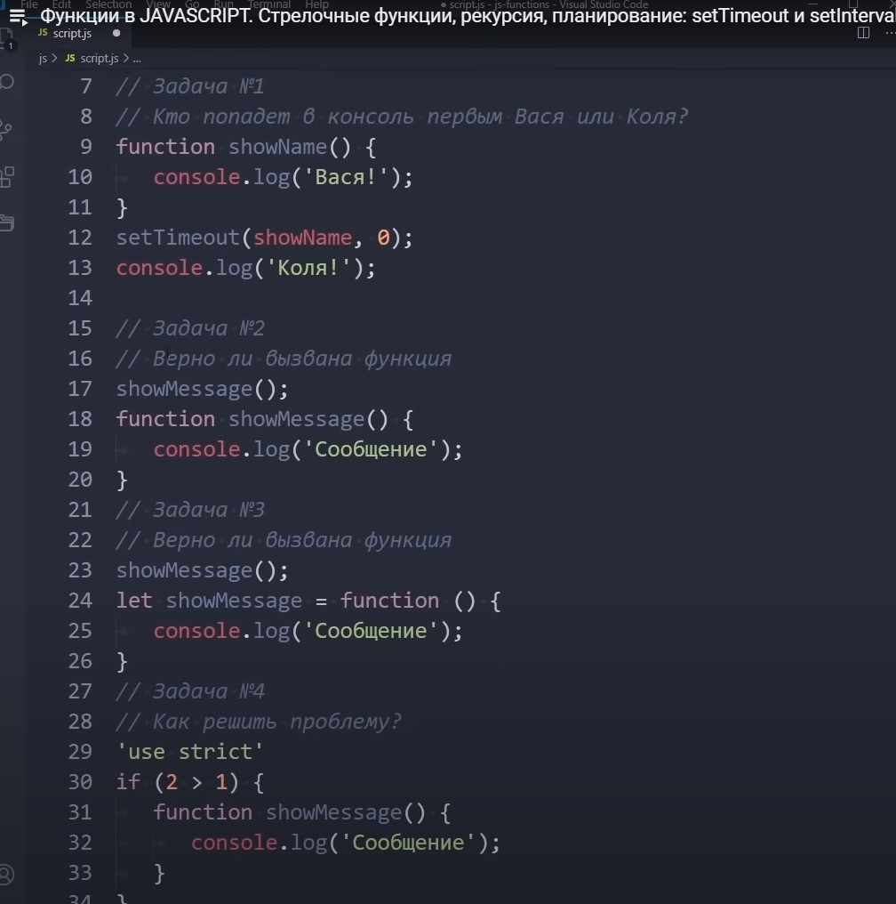
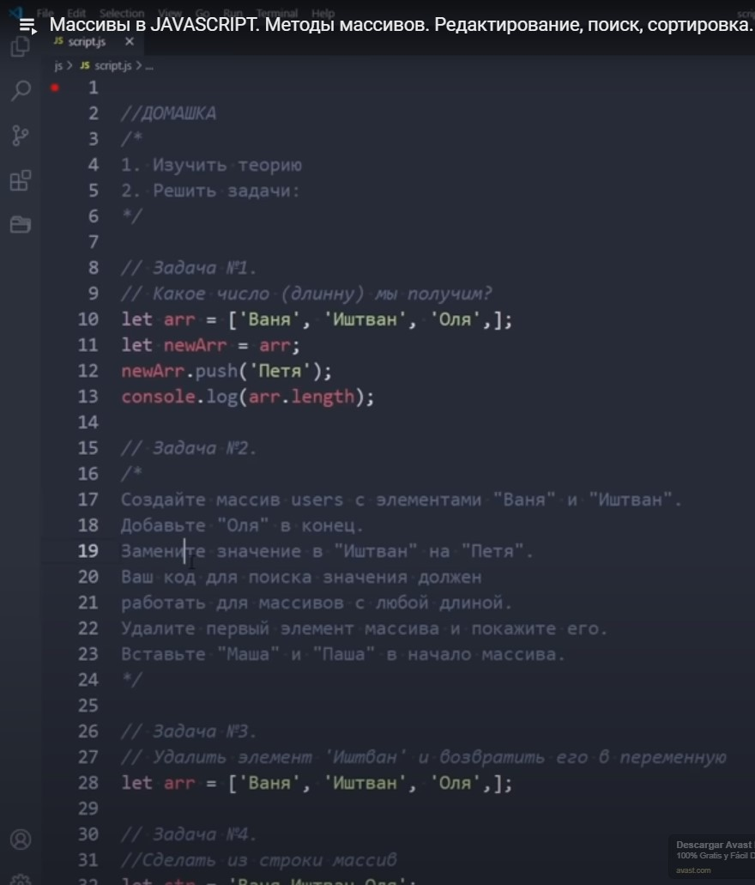
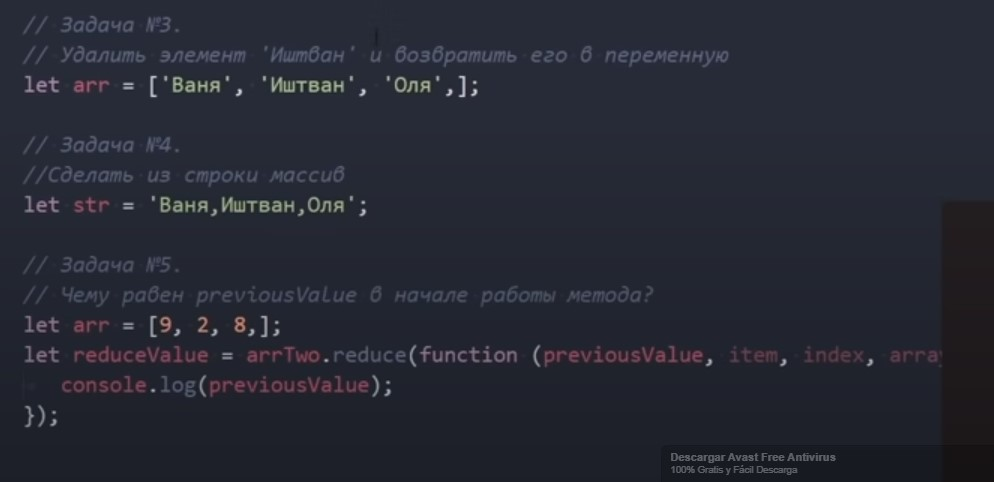
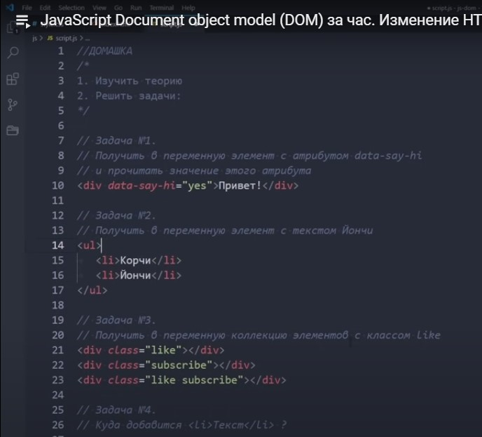
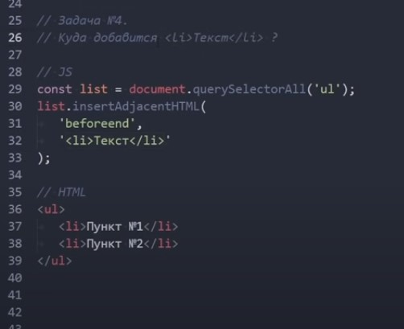
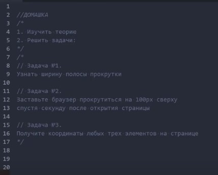

- 1. Спочатку виведе Колю, а потім вже Васю. Більше того, спочатку JS виконає всі запити consol.log, а потім повернеться і виконає setTimeOut
- 2. Функцію можна викликати з будь-якої частини коду, ящо вона обявлена саме так.
- 3. Ні не вірно, функціональний вираз можна викликати, тільки після його обявлення.
- 4. Дивись консоль


- 1. Довжина масива буде 4, бо ми не скопіювали масив в іншу змінну, а лише зробили доступ до цього массиву через іншу змінну. (дуже нелогічно, як на мене)
- 2. Дивись консоль
- 3. Дивись консоль
- 4. Дивись консоль
- 5. Буде перший елемент масива і робота функції почнеться із другого елементу.


- 1. Дивись консоль
- 2. Дивись консоль
- 3. Дивись консоль
- 4. Текст додасться у кінець елементу ul, бо вказаний параметр beforeend

Дивись відповіді у консолі та у коді JS
HOLA!
Hi!
Bonjorno!
Привіт!
- Корчи
- Йончі
- Пункт 1
- Пункт 2